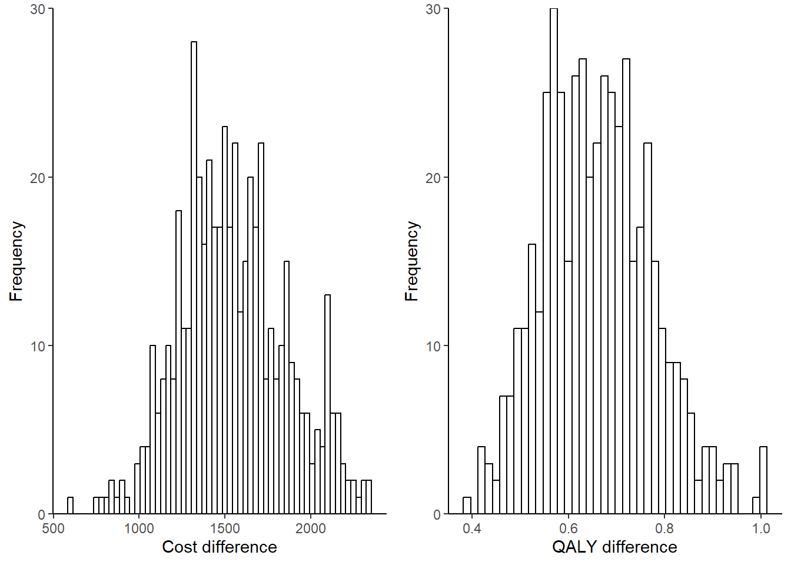
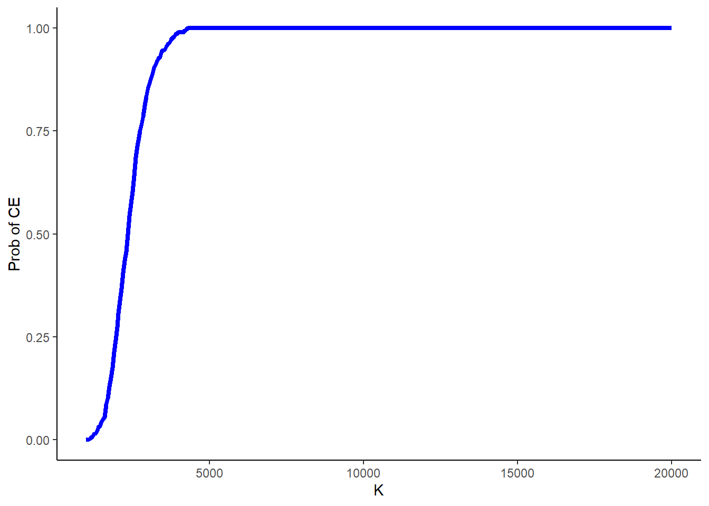

![]()
#set up initial values for the model
#initial transition probs by arm
tm_exp_init <- c(0.45,0.35,0.2)
tm_ctr_init <- c(0.25,0.25,0.50)
#transition matrices by arm
tm_exp_update <- matrix(c(0.45,0.05,0,0.35,0.6,0,0.2,0.35,1),3,3)
tm_ctr_update <- matrix(c(0.25,0.10,0,0.25,0.45,0,0.50,0.45,1),3,3)
#utilities by health state
u_well <- 0.78
u_sick <- 0.4
u_dead <- 0
#costs by arm
c_exp <- 954
c_ctr <- 435
#number of cycles
n_cycle <- 12
#initial number of patients in the cohort
n_pat <- 10000
#end of cycle 1 TP
trans_mat_cycle1_exp <- tm_exp_init%*%tm_exp_update
trans_mat_cycle1_ctr <- tm_ctr_init%*%tm_ctr_update
#lists to store TP results by cycle
trans_mat_cycles_exp <- list()
trans_mat_cycles_ctr <- list()
#create function to run the model
mm_sim <- function(tm_exp_init,tm_ctr_init,tm_exp_update,tm_ctr_update,
u_well,u_sick,u_dead,c_exp,c_ctr,n_cycle,n_pat){
res_list <- res_list_exp <- res_list_ctr <- list()
#set up matrices to contain results from all TP over each cycle by group
tm_exp <- matrix(NA, nrow = n_cycle+1, ncol = 3)
colnames(tm_exp) <- c("Well","Sick","Dead")
tm_ctr <- matrix(NA, nrow = n_cycle+1, ncol = 3)
colnames(tm_ctr) <- c("Well","Sick","Dead")
#assign first row to be initial TP
tm_exp[1,] <- tm_exp_init
tm_ctr[1,] <- tm_ctr_init
#loop through cycles and update TM at each cycle
for(i in 2:c(n_cycle+1)){
tm_exp[i,] <- tm_exp[i-1,]%*%tm_exp_update
tm_ctr[i,] <- tm_ctr[i-1,]%*%tm_ctr_update
}
#remove intial TP from matrices
tm_exp <- tm_exp[-1,]
tm_ctr <- tm_ctr[-1,]
#using obtained TM to compute number of patients in each health state at each cycle
npat_cycle_exp <- matrix(NA, nrow = n_cycle+1, ncol = 3)
colnames(npat_cycle_exp) <- c("Well","Sick","Dead")
npat_cycle_ctr <- matrix(NA, nrow = n_cycle+1, ncol = 3)
colnames(npat_cycle_ctr) <- c("Well","Sick","Dead")
npat_cycle_exp <- tm_exp*n_pat
npat_cycle_ctr <- tm_ctr*n_pat
#and number still alive
nailive_cycle_exp <- as.matrix(rowSums(npat_cycle_exp[,-3]))
colnames(nailive_cycle_exp) <- "nalive"
nailive_cycle_ctr <- as.matrix(rowSums(npat_cycle_ctr[,-3]))
colnames(nailive_cycle_ctr) <- "nalive"
#use obtained number of patients at each cycle to get the same for costs and QALYs
costs_cycle_exp <- as.matrix(rowSums(as.matrix(tm_exp*c_exp)[,-3]))
colnames(costs_cycle_exp) <- "costs"
costs_cycle_ctr <- as.matrix(rowSums(as.matrix(tm_ctr*c_ctr)[,-3]))
colnames(costs_cycle_ctr) <- "costs"
QALY_cycle_exp <- matrix(NA, nrow = n_cycle+1, ncol = 3)
colnames(QALY_cycle_exp) <- c("Well","Sick","Dead")
QALY_cycle_ctr <- matrix(NA, nrow = n_cycle+1, ncol = 3)
colnames(QALY_cycle_ctr) <- c("Well","Sick","Dead")
u_well_v <- rep(u_well,n_cycle)
u_sick_v <- rep(u_sick,n_cycle)
u_dead_v <- rep(u_dead,n_cycle)
u_M <- cbind(u_well_v,u_sick_v,u_dead_v)
QALY_cycle_exp <- as.matrix(rowSums(as.matrix(tm_exp*u_M)[,-3]))
colnames(QALY_cycle_exp) <- c("QALYs")
QALY_cycle_ctr <- as.matrix(rowSums(as.matrix(tm_ctr*u_M)[,-3]))
colnames(QALY_cycle_ctr) <- c("QALYs")
#save output
res_list_exp[[1]] <- tm_exp
res_list_exp[[2]] <- npat_cycle_exp
res_list_exp[[3]] <- nailive_cycle_exp
res_list_exp[[4]] <- costs_cycle_exp
res_list_exp[[5]] <- QALY_cycle_exp
res_list_ctr[[1]] <- tm_ctr
res_list_ctr[[2]] <- npat_cycle_ctr
res_list_ctr[[3]] <- nailive_cycle_ctr
res_list_ctr[[4]] <- costs_cycle_ctr
res_list_ctr[[5]] <- QALY_cycle_ctr
names(res_list_exp)<-c("TM","npatients","nalive","costs","QALYs")
names(res_list_ctr)<-c("TM","npatients","nalive","costs","QALYs")
res_list[[1]] <- res_list_exp
res_list[[2]] <- res_list_ctr
names(res_list)<-c("Experimental","Control")
return(res_list)
}
#run the function and get the output
mm_res <- mm_sim(tm_exp_init = tm_exp_init, tm_ctr_init = tm_ctr_init, tm_exp_update = tm_exp_update,
tm_ctr_update = tm_ctr_update, u_well = u_well, u_sick = u_sick, u_dead = u_dead, c_exp = c_exp,
c_ctr = c_ctr, n_cycle = n_cycle, n_pat = n_pat)Markov Models in Economic Evaluations - II
Quarto
R
Academia
Health Economics

Hello folks and welcome back to my blog for a new post babbling about statistical methods in health economics!. Today I simply want to close the topic initiated in my last post on the bases of Markov Models, where I introduced the method, its objectives in the health economic context, and present a very simple structure to describe the key ideas underlying the approach. As I mentioned in that post, I would like to refer to proper references, such as Khan (2015), if you are interested in the topic and would like to have a more in-depth look at how these models work and implement a more advanced structure. In my previous post you will also find some links to online websites and pages which show how such models can be implemented using software packages such as R.
Base-case Markov Model
Throughout this post I will assume that the reader is already familiar with the basic structure of Markov Models and the specific terminology used to denote key components of this approach, including the concepts of transition matrix, transition probability, and cycle. If this is not true, I recommend that you first check some references on the topic or read my previous post about this. I will also consider the same Markov Model example introduced in my previous post, formed by three health states (Well, Sick and Dead), and whose objective is to estimate the expected difference in Costs and QALYs over a period of \(12\) cycles, each of \(1\) month, between a new Experimental intervention and a Control group.
For our base-case analysis, let’s assume treatment-specific \(3\times3\) transition matrices (\(P^{exp},P^{ctr}\)), associating the three health states, and \(1\times3\) matrices of initial probabilities (\(M^{exp}_0,M^{ctr}_{0}\)). These transition matrices are first used to update the initial probabilities at the end of the first cycle, and then iteratively used to generate updated matrices at each follow-up cycle. As for the health economic outcomes, let’s assume (monthly) utility values for each health state in the model: \(u^{well}=0.78\), \(u^{sick}=0.40\), \(u^{dead}=0\), which are constant across treatments. Conversely, we assume (monthly) costs which are constant across health states but vary between treatment groups: \(c_{exp}=954\), \(c^{ctr}=435\). Let’s set the proportion of patients in each of the health states at the start of the model to be \(10000\), and proceed to calculate the transition matrices and total costs and QALYs associated with both treatment groups over \(12\) months via our base-case Markov Model.
Based on the output of the model, we can retrieve an estimate of the mean costs and QALYs (and the group differences) over the \(12\) months period (without discounting) by taking the sum across all QALYs and Costs expected values accrued at each cycle. These are summarised and presented in Table 1.
| Experimental | Control | Difference | |
|---|---|---|---|
| QALYs | 0.95 | 0.29 | 0.66 |
| Costs | 1798.00 | 245.00 | 1553.00 |
From these estimates, we can then compute the value of the estimated \(\text{ICER}=\frac{1553}{0.66}=2344\), representing the incremental cost per unit of QALY gained associated with using the Experimental intervention compared to the Control group. If the decision-maker provides a specific value for their willingness to pay threshold, say \(K=20000\) euros per QALY gained, then it is also possible to make a decision on whether to consider the intervention cost-effective or not. In our example, since \(\text{ICER}=2344< K = 20000\), then we would conclude that the intervention is cost-effective. Similarly, using the net benefit framework, we could compute the quantity \(\text{NB}=K\times \mu_{\Delta_e} - \mu_{\Delta_c}= 20000 \times 0.66 - 1553=1.1696\times 10^{4}\), and since this is \(>0\), we would also conclude that the intervention is cost-effective.
What about uncertainty?
A general problem of the decision made based on the results from the base-case analysis is that it completely ignores any type of uncertainty surrounding the input parameters of the models, i.e. transition probabilities, initial probabilities, utilities associated with each health state, and costs associated with each group. Indeed, since only specific values for each of these inputs was chosen, the results can only be valid conditional on these input values to be exactly correct. In reality, health economists are often uncertain about the reliability of these inputs of the model as these are typically collected from the literature, based on expert opinions, or even simply guessed based on some assumptions and the context considered. This, however, means that we should not blindly trust the results from analyses that are quite restrictive with respect to the input values assigned to the model. Rather, a much more reliable picture of the results can be obtained when these inputs are varied over a range of plausible values to assess the impact of their variation on the model conclusions. Were the results very sensitive to variations of these input values, then this would imply the presence of a quite large impact of parameter uncertainty on the conclusions of the model, which should be taken into account when expressing any decision in terms of cost-effectiveness. This is why the practice of varying input values to assess their impact on model results, also known as sensitivity analysis, is a mandatory requirement when assessing cost-effectiveness of interventions, particularly in the context of decision analytic models (e.g. Markov Models), whose input value choices are likely to strongly determine the results of the analysis.
There are many different types of sensitivity analysis that can be implemented to assess the results of a Markov Model, which are mainly distinguished based the approach used to vary the values of the inputs. One of the simplest form of sensitivity analysis is called One-Way sensitivity analysis and corresponds in varying the values of one input at a time, typically over a pre-defined grid of values (e.g. \(2\)), and re-run the model based on the newly updated value for that specific input. This is then repeated for each value chosen for each model input to generate the same type of output of the base-case model but replicated for each new value selected for each model input varied. A slightly more complex approach takes the name of Two-Way sensitivity analysis, where the same procedure of the One-Way approach is used with the difference at each time the model is re-run the value of not one but two model inputs are changed simultaneously when generating the updated results. This is then repeated for each pair of inputs across the range of values that need to be assessed for each model input.
Although useful, these types of sensitivity analyses, called “deterministic”, are limited in that they can only explore the impact of variation of the input values conditional on all or most of the other input-values remaining constant, which may not be a realistic approach when assessing the impact of uncertainty on multiple model inputs. To overcome these limitations, a different approach called probabilistic sensitivity analysis (PSA) is used to quantify the impact associated with the simultaneous variation of all model inputs on the results. This is typically achieved through the use of probability distributions which allow to parameterise in a convenient way the level of uncertainty associated with each input in the model. For example, we may want to use a Uniform distribution to express our level of uncertainty around the transition probability value between the health state Well and Sick in each treatment arm, centering these distributions around the assumed value in the determinsitic analysis as a good starting point. We can do the same with other model parameters, such as expected QALYs and costs associated with each health state/treatment, taking care that appropriate probability distributions are used to express our level of uncertainty around specific parameter values. Let’s now try to replicate the model run before using these distributions to account for this sort of uncertainty.
#set number of model replications to account for parameter uncertainty
S <- 500
#set up initial values for the model
#in PSA these can be used to define mean values of the distributions
#assigned to each parameter
#initial transition probs by arm
tm_exp_init_mu <- c(0.45,0.35,0.2)
tm_ctr_init_mu <- c(0.25,0.25,0.50)
#transition matrices by arm
tm_exp_update_mu <- matrix(c(0.45,0.05,0,0.35,0.6,0,0.2,0.35,1),3,3)
tm_ctr_update_mu <- matrix(c(0.25,0.10,0,0.25,0.45,0,0.50,0.45,1),3,3)
#utilities by health state
u_well_mu <- 0.78
u_sick_mu <- 0.4
u_dead_mu <- 0
#costs by arm
c_exp_mu <- 954
c_ctr_mu <- 435
#number of cycles
n_cycle <- 12
#initial number of patients in the cohort
n_pat <- 10000
#create function to run the model
mm_sim_psa <- function(tm_exp_init_mu,tm_ctr_init_mu,tm_exp_update_mu,tm_ctr_update_mu,
u_well_mu,u_sick_mu,u_dead_mu,c_exp_mu,c_ctr_mu,n_cycle,n_pat,S){
res_list <- res_list_exp <- res_list_ctr <- list()
QALY_cycle_exp_s <- QALY_cycle_ctr_s <- matrix(NA, n_cycle, S)
costs_cycle_exp_s <- costs_cycle_ctr_s <- matrix(NA, n_cycle, S)
nailive_cycle_exp_s <- nailive_cycle_ctr_s <- matrix(NA, n_cycle, S)
npat_cycle_exp_s <- array(NA, dim=c(n_cycle,3,S))
npat_cycle_ctr_s <- array(NA, dim=c(n_cycle,3,S))
tm_exp_s <- array(NA, dim=c(n_cycle,3,S))
tm_ctr_s <- array(NA, dim=c(n_cycle,3,S))
#assign distributions to each input to generate random value from it at each model iteration
#use uniform for probabilities and define departure from mean value
for(s in 1:S){
sd_p <- 0.05
tm_exp_init_s <- c()
tm_exp_init_s[1] <- runif(1,min=tm_exp_init_mu[1]-0.05,max=tm_exp_init_mu[1]+0.05)
tm_exp_init_s[2] <- runif(1,min=tm_exp_init_mu[2]-0.05,max=tm_exp_init_mu[2]+0.05)
tm_exp_init_s[3] <- 1 - tm_exp_init_s[1] - tm_exp_init_s[2] #must ensure sum of prob=1
tm_ctr_init_s <- c()
tm_ctr_init_s[1] <- runif(1,min=tm_ctr_init_mu[1]-0.05,max=tm_ctr_init_mu[1]+0.05)
tm_ctr_init_s[2] <- runif(1,min=tm_ctr_init_mu[2]-0.05,max=tm_ctr_init_mu[2]+0.05)
tm_ctr_init_s[3] <- 1 - tm_ctr_init_s[1] - tm_ctr_init_s[2] #must ensure sum of prob=1
#same for transition matrices but must keep prob of moving out/in of death state =0/1
tm_exp_update_s <- c()
tm_exp_update_s <- matrix(c(runif(1,min=tm_exp_update_mu[1,1]-0.05,max=tm_exp_update_mu[1,1]+0.05),runif(1,min=tm_exp_update_mu[2,1]-0.05,max=tm_exp_update_mu[2,1]+0.05),0,runif(1,min=tm_exp_update_mu[1,2]-0.05,max=tm_exp_update_mu[1,2]+0.05),runif(1,min=tm_exp_update_mu[2,2]-0.05,max=tm_exp_update_mu[2,2]+0.05),0,NA,NA,1),3,3)
tm_exp_update_s[1,3] <- 1 - (tm_exp_update_s[1,1]+tm_exp_update_s[1,2]) #ensure sum of probs=1
tm_exp_update_s[2,3] <- 1 - (tm_exp_update_s[2,1]+tm_exp_update_s[2,2]) #ensure sum of probs=1
tm_ctr_update_s <- c()
tm_ctr_update_s <- matrix(c(runif(1,min=tm_ctr_update_mu[1,1]-0.05,max=tm_ctr_update_mu[1,1]+0.05),runif(1,min=tm_ctr_update_mu[2,1]-0.05,max=tm_ctr_update_mu[2,1]+0.05),0,runif(1,min=tm_ctr_update_mu[1,2]-0.05,max=tm_ctr_update_mu[1,2]+0.05),runif(1,min=tm_ctr_update_mu[2,2]-0.05,max=tm_ctr_update_mu[2,2]+0.05),0,NA,NA,1),3,3)
tm_ctr_update_s[1,3] <- 1 - (tm_ctr_update_s[1,1]+tm_ctr_update_s[1,2]) #ensure sum of probs=1
tm_ctr_update_s[2,3] <- 1 - (tm_ctr_update_s[2,1]+tm_ctr_update_s[2,2]) #ensure sum of probs=1
#use Gamma to generate costs and assume std value
c_sd <- 150
c_exp_s <- rgamma(1,shape=c_exp_mu^2/c_sd^2,scale=c_sd^2/c_exp_mu)
c_ctr_s <- rgamma(1,shape=c_ctr_mu^2/c_sd^2,scale=c_sd^2/c_ctr_mu)
#use Beta to generate utilities and assume std value
u_sd <- 0.1
u_well_s <- rbeta(1, shape1 = (u_well_mu*(1-u_well_mu)/u_sd^2-1)*u_well_mu, shape2 = (u_well_mu*(1-u_well_mu)/u_sd^2-1)*(1-u_well_mu))
u_sick_s <- rbeta(1, shape1 = (u_sick_mu*(1-u_sick_mu)/u_sd^2-1)*u_sick_mu, shape2 = (u_sick_mu*(1-u_sick_mu)/u_sd^2-1)*(1-u_sick_mu))
u_dead_s <- u_dead_mu #keep utility of dead state=0
#set up matrices to contain results from all TP over each cycle by group
tm_exp <- matrix(NA, nrow = n_cycle+1, ncol = 3)
colnames(tm_exp) <- c("Well","Sick","Dead")
tm_ctr <- matrix(NA, nrow = n_cycle+1, ncol = 3)
colnames(tm_ctr) <- c("Well","Sick","Dead")
#assign first row to be initial TP
tm_exp[1,] <- tm_exp_init_s
tm_ctr[1,] <- tm_ctr_init_s
#loop through cycles and update TM at each cycle
for(i in 2:c(n_cycle+1)){
tm_exp[i,] <- tm_exp[i-1,]%*%tm_exp_update
tm_ctr[i,] <- tm_ctr[i-1,]%*%tm_ctr_update
}
#remove intial TP from matrices
tm_exp <- tm_exp[-1,]
tm_ctr <- tm_ctr[-1,]
#using obtained TM to compute number of patients in each health state at each cycle
npat_cycle_exp <- matrix(NA, nrow = n_cycle+1, ncol = 3)
colnames(npat_cycle_exp) <- c("Well","Sick","Dead")
npat_cycle_ctr <- matrix(NA, nrow = n_cycle+1, ncol = 3)
colnames(npat_cycle_ctr) <- c("Well","Sick","Dead")
npat_cycle_exp <- tm_exp*n_pat
npat_cycle_ctr <- tm_ctr*n_pat
#and number still alive
nailive_cycle_exp <- as.matrix(rowSums(npat_cycle_exp[,-3]))
colnames(nailive_cycle_exp) <- "nalive"
nailive_cycle_ctr <- as.matrix(rowSums(npat_cycle_ctr[,-3]))
colnames(nailive_cycle_ctr) <- "nalive"
#use obtained number of patients at each cycle to get the same for costs and QALYs
costs_cycle_exp <- as.matrix(rowSums(as.matrix(tm_exp*c_exp_s)[,-3]))
colnames(costs_cycle_exp) <- "costs"
costs_cycle_ctr <- as.matrix(rowSums(as.matrix(tm_ctr*c_ctr_s)[,-3]))
colnames(costs_cycle_ctr) <- "costs"
QALY_cycle_exp <- matrix(NA, nrow = n_cycle+1, ncol = 3)
colnames(QALY_cycle_exp) <- c("Well","Sick","Dead")
QALY_cycle_ctr <- matrix(NA, nrow = n_cycle+1, ncol = 3)
colnames(QALY_cycle_ctr) <- c("Well","Sick","Dead")
u_well_v <- rep(u_well_s,n_cycle)
u_sick_v <- rep(u_sick_s,n_cycle)
u_dead_v <- rep(u_dead_s,n_cycle)
u_M <- cbind(u_well_v,u_sick_v,u_dead_v)
QALY_cycle_exp <- as.matrix(rowSums(as.matrix(tm_exp*u_M)[,-3]))
colnames(QALY_cycle_exp) <- c("QALYs")
QALY_cycle_ctr <- as.matrix(rowSums(as.matrix(tm_ctr*u_M)[,-3]))
colnames(QALY_cycle_ctr) <- c("QALYs")
#save results from each iteration for each output that we want to store
tm_exp_s[,,s] <- tm_exp
tm_exp_s[,,s] <- tm_ctr
npat_cycle_exp_s[,,s] <- npat_cycle_exp
npat_cycle_ctr_s[,,s] <- npat_cycle_ctr
nailive_cycle_exp_s[,s] <- nailive_cycle_exp
nailive_cycle_ctr_s[,s] <- nailive_cycle_ctr
costs_cycle_exp_s[,s] <- costs_cycle_exp
costs_cycle_ctr_s[,s] <- costs_cycle_ctr
QALY_cycle_exp_s[,s] <- QALY_cycle_exp
QALY_cycle_ctr_s[,s] <- QALY_cycle_ctr
}
#save output
res_list_exp[[1]] <- tm_exp_s
res_list_exp[[2]] <- npat_cycle_exp_s
res_list_exp[[3]] <- nailive_cycle_exp_s
res_list_exp[[4]] <- costs_cycle_exp_s
res_list_exp[[5]] <- QALY_cycle_exp_s
res_list_ctr[[1]] <- tm_ctr_s
res_list_ctr[[2]] <- npat_cycle_ctr_s
res_list_ctr[[3]] <- nailive_cycle_ctr_s
res_list_ctr[[4]] <- costs_cycle_ctr_s
res_list_ctr[[5]] <- QALY_cycle_ctr_s
names(res_list_exp)<-c("TM","npatients","nalive","costs","QALYs")
names(res_list_ctr)<-c("TM","npatients","nalive","costs","QALYs")
res_list[[1]] <- res_list_exp
res_list[[2]] <- res_list_ctr
names(res_list)<-c("Experimental","Control")
return(res_list)
}
#end of cycle 1 TP
trans_mat_cycle1_exp <- tm_exp_init%*%tm_exp_update
trans_mat_cycle1_ctr <- tm_ctr_init%*%tm_ctr_update
#lists to store TP results by cycle
trans_mat_cycles_exp <- list()
trans_mat_cycles_ctr <- list()
#run the function and get the output
set.seed(2345) #set rng seed for replicability
mm_res_psa <- mm_sim_psa(tm_exp_init_mu = tm_exp_init_mu, tm_ctr_init_mu = tm_ctr_init_mu, tm_exp_update_mu = tm_exp_update_mu, tm_ctr_update_mu = tm_ctr_update_mu, u_well_mu = u_well_mu, u_sick_mu = u_sick_mu, u_dead_mu = u_dead_mu, c_exp_mu = c_exp_mu, c_ctr_mu = c_ctr_mu, n_cycle = n_cycle, n_pat = n_pat, S=S)We can now inspect the results of the model based on a total of \(S=500\) iterations, i.e. a random value for each model input was generated 500 times from their assumed probability distribution and used in the model to generate the output as in the base-case analysis. This implies that for each output obtained in the base-case, we now obtain a set of values or distribution of values that we can take a look at. By doing so, we are effectively quantifying the degree of uncertainty surrounding each model input. For example, we can inspect the distribution of the expected costs and QALY differences in between the Experimental and Control intervention through histograms, shown in Figure 1.

We can now replicate the approach used for the base-case model by summarising the results in terms of common health economic measures, such as ICER and NB, assuming a willingness to pay parameter of 2^{4} for decision-making purposes.
#create data frame
mu_res <- data.frame(mu_c_exp_post,mu_c_ctr_post,mu_e_exp_post,mu_e_ctr_post)
#summary statistics for costs and QALYs by arm across simulations
summary(mu_res) mu_c_exp_post mu_c_ctr_post mu_e_exp_post mu_e_ctr_post
Min. : 965 Min. : 69.23 Min. :0.6043 Min. :0.1755
1st Qu.:1567 1st Qu.:178.73 1st Qu.:0.8448 1st Qu.:0.2508
Median :1752 Median :231.93 Median :0.9471 Median :0.2876
Mean :1791 Mean :241.78 Mean :0.9514 Mean :0.2891
3rd Qu.:1990 3rd Qu.:290.33 3rd Qu.:1.0494 3rd Qu.:0.3193
Max. :2557 Max. :561.54 Max. :1.4197 Max. :0.4490 ICER <- mu_c_diff_post/mu_e_diff_post
NB <- K*mu_e_diff_post - mu_c_diff_post
#summary statistics for ICER/NB across simulations
summary(ICER) Min. 1st Qu. Median Mean 3rd Qu. Max.
1099 1969 2350 2397 2751 4276 summary(NB) Min. 1st Qu. Median Mean 3rd Qu. Max.
6199 9984 11609 11697 13231 18915 Finally, another typical source of uncertainty in these analyses is around the value of the acceptance threshold itself, as in many cases governments’ decisions are always characterised by some degree of uncertainty around what value for \(K\) to use. Often this is quantified by computing the above probability of cost-effectiveness for a range of values of \(K\).
#range of values to consider for K
k_value <- seq(from = 1000, to = 20000, by = 50)
n_kval <- length(k_value)
NB_k <- matrix(NA,nrow = S, ncol = n_kval)
p_CE_nb_k <- rep(NA, n_kval)
#compute prob CE based on NB at each value of K
for(k in 1:n_kval){
for(s in 1:S){
NB_k[s,k] <- k_value[k]*mu_e_diff_post[s] - mu_c_diff_post[s]
}
p_CE_nb_k[k] <- sum(NB_k[,k]>0)/S
}and then plot the results in Figure 2 to show what is known as the cost-effectiveness acceptability curve (CEAC), showing how the probability of cost-effectiveness changes as the value of \(K\) is varied.

I hope you liked today’s topic as I sure did. Till next time!
References
Khan, Iftekhar. 2015. Design & Analysis of Clinical Trials for Economic Evaluation & Reimbursement: An Applied Approach Using SAS & STATA. CRC Press.